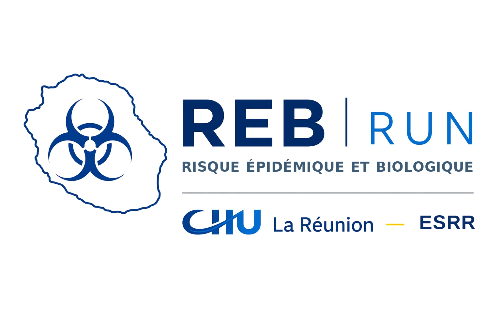

{
"fhv": {
"eb": [{ "tag":"RDC", "name":"Ituri", "cap":"Bunia", "risk":"high" }],
"marburg": [{ "tag":"…", "name":"…", "cap":"…", "risk":"medium" }],
"lassa": [ … ],
"fhcc": [ … ]
},
"mers": ["Arabie Saoudite", "Qatar", "…"],
"mpox": ["RDC", "Madagascar", "…"]
}